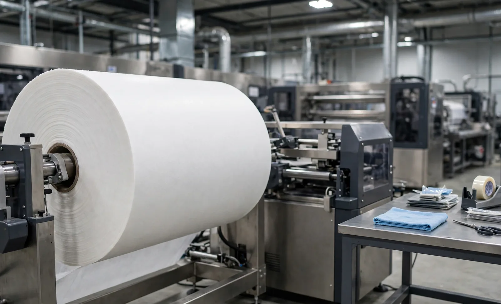
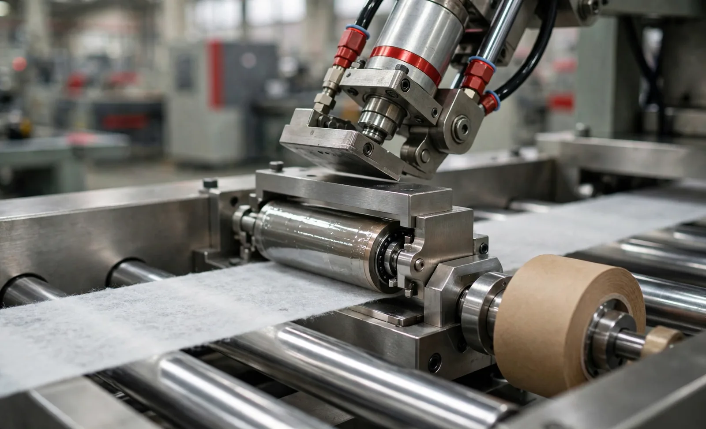

Published November 24, 2026 | By HDPTH Technical Editorial Team

Parent rolls never last forever, so every nonwoven converting line faces the same recurring event several times per shift: the old roll runs out, and the new one must be joined to the web. Do nothing and the line stops; the operator threads up from standstill and fifteen or twenty minutes of production disappear with each roll. Splice automatically and the line keeps running — but the joint itself becomes a travelling defect that must survive the slitter, the perforator and the rewinder without ruining good product. How a buyer resolves that trade-off is one of the most consequential single decisions in the whole machine order, because it fixes the capital cost of the unwind section, the skill profile of the operating team, and a large share of both planned and unplanned downtime for the life of the line. This guide compares the two industrial methods for making that join — the flying splice and the zero-speed splice — on how they work, what they cost, where each wins, and how to hold the supplier to the performance either way.
How a flying splice works — and where it wins
In a flying splice, the new parent roll is prepared on a paster station alongside the running unwind: the leading edge is dressed with adhesive — typically in a defined pattern rather than a full-width bead — and the roll is accelerated so its surface speed matches the moving web. At the programmed moment the paster presses the new leading edge onto the outgoing web, a cut-off knife removes the old tail, and the line never slows. The entire event lasts a few seconds, requires no web storage, and adds comparatively little to the machine price. That economy is the method’s great virtue: on a modest line, a flying-splice unwind costs meaningfully less than an accumulator-based system, occupies less floor space, and has fewer moving assemblies to maintain.
The catch is that the joint is made while everything is moving. Surface speed must match within a tight window, adhesive tack must survive the dwell the paster provides, and the pressurised contact must hold long enough for the bond to develop — all while web tension continues and the old roll’s tail flaps free until it is cut. Success therefore leans heavily on preparation discipline and operator skill: edges cut square, adhesive applied to pattern, rolls dressed in time. When all of that aligns, a flying splice is perfectly dependable; when preparation slips, the new roll fails to attach, the web runs out anyway, and the line stops for a full re-thread — the worst of both worlds, because the automatic system was paid for but the stoppage happened regardless.
How a zero-speed splice works — and where it wins
A zero-speed splice removes the motion from the joint instead of removing the stoppage from the line. The machine holds a store of web — an accumulator or festoon — and the splice is made on a stationary table, or on a rotating turret where the paster with the prepared roll rotates into position while the web momentarily pauses between nip points. The two ends are aligned, glued and pressed together under controlled, repeatable conditions, after which the stored web is released, the fresh roll accelerates into the circuit, and production continues without interruption. Because speed, tension and timing no longer influence the bond, the joint itself is near-deterministic: the same preparation produces the same result regardless of whether the line runs at 150 or 600 metres per minute.
That determinism is what buyers are actually purchasing. Success rates on well-engineered zero-speed systems are consistently high and — critically — consistent across shifts, operators and roll sizes, because the method depends far less on human timing. The costs are equally real: accumulators or turret pasters add capital, height and floor space; the mechanism needs maintenance and its own commissioning; and the control system must choreograph web storage, splice, and release without disturbing downstream tension. On wide, fast lines running many changeovers per shift, that arithmetic usually lands clearly in zero-speed’s favour; on slower lines with few changes per shift, it may not.
The decision factors that actually move the numbers
Buyers often frame the choice as “automatic versus cheaper”, but the honest comparison is four concrete variables. The first is changeover frequency: a line that changes parent rolls six times per shift multiplies every per-splice cost by roughly twelve per day, so reliability improvements compound quickly, while a line changing twice per shift barely feels them. The second is the cost of a stopped minute: at high line speed with expensive upstream material — or on a line feeding a baler, perforator or folding machine that cannot buffer — the lost production from one failed splice can exceed the entire capital difference between the two methods within a year. The third is the cost of a passing splice: every splice that succeeds still travels through the machine, and what it does there depends on your product. The fourth is the workforce: flying splicing rewards experienced operators and degrades with staff turnover, while zero-speed systems buy consistency partly by removing the operator’s timing from the equation — a genuine advantage where skilled labour is scarce or shifts are long.
A simple annual model makes the decision honest. Multiply changeovers per shift by shifts per year to get events; multiply events by the minutes lost per failed attempt and the scrap per failed attempt; add the cost of splice-related defects and roll rejections downstream; and compare that total against the capital and maintenance difference between the two unwind configurations over the same year. Buyers who run this calculation usually find a clear crossover: below a certain speed and changeover frequency, flying splice wins on economics; above it, zero-speed wins decisively.
Matching splice type to product and downstream process
The product being converted changes the answer as much as the line speed does. On hygiene lines converting into perforated or embossed products, a passing splice is not merely cosmetic: the double-thickness joint can mark nips, break perforation register, or bury itself inside an otherwise saleable roll, so the line needs splice handling in addition to the splice method — slow-down at the event, marked or tabbed splice zones, detection sensors and outfeed logic that removes splice-containing rolls from the good count. Medical and filtration materials push the same logic further, because a hidden splice inside a critical roll is a customer complaint waiting to happen, which tilts buyers toward zero-speed splicing precisely because its joints are smaller, flatter and more consistently placed. Wide spunbond lines running large, heavy parent rolls sit at the other pole in one respect — roll changes are less frequent — but each failed attempt is so costly in material and re-threading time that zero-speed is still commonly justified. Narrow-lane slitting of lighter webs, moderate speeds and easy downstream removal of defective product is the natural habitat of the disciplined flying-splice operation.
One further product consideration is roll diameter: as parent rolls grow larger, the kinetic energy and tail behaviour at cut-off get worse for flying splices, while a zero-speed system is largely indifferent to diameter. If your material roadmap points toward bigger rolls to reduce changeovers, that trend itself argues for the zero-speed investment, because the method you buy today must survive the rolls you plan to run in five years.

Specifying splice performance in the machine order
Whichever method wins the economics, the specification must turn “reliable splicing” into testable clauses, because neither method demonstrates its weakness in a one-hour demonstration. The requirement specification should state the parent-roll diameter range, the changeover rate per shift, and a numeric splice success rate at production speed — a floor such as 98 or 99 percent over a defined number of consecutive automatic splices, not an adjective. For flying-splice lines, add clauses on paster preparation aids: edge trim, adhesive pattern control, and the operator interface that guides preparation timing. For zero-speed lines, add accumulator performance: the speed dip and tension disturbance during the event, bounded so the downstream process never registers the splice. Either way, require splice detection and outfeed handling as part of the base offer — marked splice zones, detection at the machine, and removal logic at the rewinder — because the travelling splice is a certainty in both methods and its handling is where quality is protected.
Then hold it at the FAT. The acceptance test should run a defined sequence of automatic splices at production speed on the buyer’s own parent rolls where possible, including the worst case of maximum roll diameter, and record for each event whether the splice held, the speed dip, the tension trace, and whether detection and rejection logic fired correctly. A supplier confident in either method will welcome this test; the test clauses cost nothing to write and settle the argument before shipment rather than after installation.
The equipment side of this decision does not stand alone: the technique of the stationary joint is treated in depth in the Slitter Rewinder Zero-Speed Splicing: Buyer’s Guide, and the preparation hardware — paster types, layout and what separates a good splice table from a bad one — is covered in the Slitter Rewinder Splice Table: Buyer’s Guide. To see how unwind, splice systems and high-speed slitting are configured together in a production machine, review the HDPTH high-speed slitting machines.
Still Deciding Between Flying and Zero-Speed Splicing?
Send HDPTH your parent-roll sizes, changeover frequency, line speed and downstream process. Our application engineers will run the splice economics with you, recommend the unwind configuration for your product mix — and demonstrate the splice success rate at production speed during the FAT, with the protocol written before you order.
Submit Your Project InquiryFrequently asked questions
What is the difference between a flying splice and a zero-speed splice?
A flying splice joins a new parent roll to the running web while both are moving at line speed: the new roll is accelerated on a paster to match the web velocity, then the two ends are pressed together and the old tail is cut away. A zero-speed splice instead brings the splice point to rest: the machine stores web in an accumulator (or stops the unwind on a turret paster) so the two ends are glued together while stationary, and production continues from the stored web during the splice. The practical difference is that a flying splice is made under dynamic conditions while a zero-speed splice is made under controlled, almost laboratory-like conditions.
Which splice method gives the higher success rate?
Zero-speed splicing generally achieves the higher and more consistent success rate because the joint is made with the web stationary, so speed, tension and timing no longer vary the result the way they do at line speed. Well-engineered zero-speed systems routinely run success rates above 99 percent, while flying splices depend heavily on roll preparation, paster condition and operator skill, and their success rate typically falls as line speed and web width increase. That said, a disciplined flying-splice operation with well-trained operators can be entirely acceptable where speeds are moderate and a passing splice does little downstream damage.
What happens when a splice passes through a nonwoven converting line?
A splice is a double-thickness joint with adhesive at the edge, so as it travels through the slitter rewinder and downstream equipment it can mark nip rolls, trigger web-break detectors, disturb perforation or embossing registers, and finish up buried inside an otherwise good customer roll. For this reason converting lines combine the splice method with splice handling: slow-down at the splice, marked or tabbed splice zones, automatic detection and rejection, and outfeed logic that removes splice-containing rolls from the good-roll count. The cost of the downstream handling is part of the splice decision, not an afterthought.
Is a zero-speed splicer worth the extra cost?
It is worth the cost when the arithmetic of lost production, splice waste and downstream defects over the machine’s life exceeds the price difference — which it usually does on high-speed, wide, or high-utilisation nonwoven lines running large parent rolls and many changeovers per shift. It is often not justified on slower lines, short shifts, or applications where a passing splice is harmless and can be easily removed. Buyers should build a simple annual model — changeovers per shift, minutes lost per splice event, scrap per event, line speed and labour — and compare that number with the capital difference between the two unwind configurations.
How should splice performance be tested in the factory acceptance test?
Insist on a splice test at production speed using the buyer’s own parent rolls where possible: a defined number of consecutive splices (for example 20 or 30), an agreed success-rate floor (for example 98 or 99 percent), a measurement of speed dip and tension disturbance during the event, and a demonstration of splice detection and outfeed handling — that the splice is marked, detected and any affected roll removed from the good count. The protocol should also cover the worst case, such as a splice at maximum roll diameter, and record operator actions so the training requirement at commissioning matches what the test actually demanded.